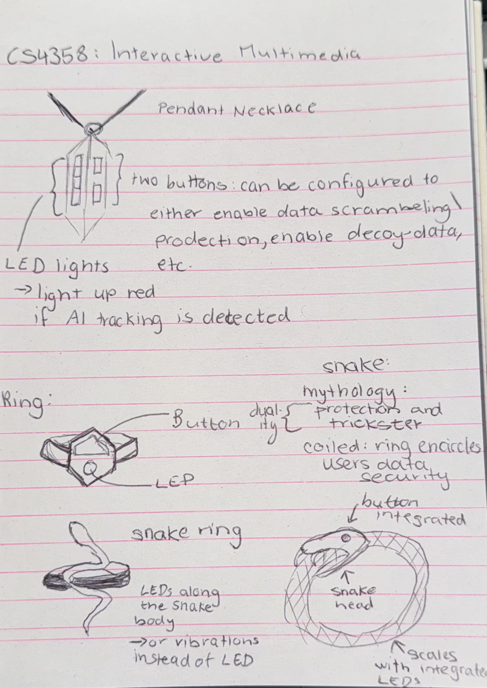
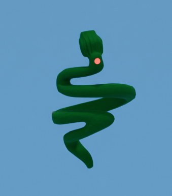

ViperRing: Wearable Privacy Tool

Project Type
Speculative Design & Research
Medium
Mixed Media & Digital Fiction
Tools
Blender, LTX Studio, DaVinci Resolve
Team
Individual
ViperRing is a speculative design fiction developed as a critical response to the pervasiveness of AI-driven data collection. The project consists of two interconnected components: a critical video essay exploring the concept of the Digital Doppelgänger, and a conceptual wearable smart ring designed to disrupted invisible surveillance in both physical and digital environments.
Design Context and Problem
The core research for this project investigates how AI systems utilise invisible surveillance mechanisms to shape user behavior. Key theoretical frameworks include:
Surveillance Capitalism
As defined by Shoshana Zuboff, this describes the treatment of human experience as free raw material for data extraction, leading to "digital dispossession"
Behavioral Surplus
The process of turning user experiences into prediction products sold in behavioral futures markets.
Digital Doppelgängers
The creation of algorithmic replicas constructed from vast amounts of personal data that blur the lines of authenticity and consent.
The project responds to the "black box" nature of AI, where users unknowingly share sensitive data that platforms use to predict and manipulate behavior.
Responsibilities
This was an individual project involving end-to-end execution of the creative and technical workflow. Responsibilities encompassed conducting primary research which included a literature review on surveillance theory and critical technology studies and developing the speculative framing and the ViperRing as a tangible resistance prop. Furthermore, the responsibilities of this project involved authoring the full written report, creating storyboards for both project phases, and producing the final design outputs, as well as executing the design through 3D modeling and AI-assisted creative tools.
Design and Development Process
The development followed a rigorous, two-phase iterative process that translated abstract critical theory into a functional speculative narrative.
Phase 01
Critical Video Essay ("I AM YOU")
The project began with a video essay created using LTX Studio to critique AI through its own medium. The narrative centers on a student whose data-sharing habits result in the emergence of a humanoid avatar, a digital doppelgänger, representing the AI's total knowledge of the user.
Phase 02
ViperRing
Building on the video's critique, the ViperRing was developed as a physical tool for resistance. Early explorations included pendants and clip-on devices before selecting a ring for its symbolic resonance and ease of wear. Iterative 3D modeling was performed using Blender and Bambu Studio. The design was modified to include a USB-C charging port, haptic feedback sensors, and a red LED indicator to signal real-time AI tracking. A comprehensive identity was developed, including a "PrivAI" company profile, social media strategies, and AR filters (e.g., "Data Cloak") to demonstrate how the product would exist in a consumer market.
Visual and Interaction Documentation
The ViperRing is designed to act as a personal AI firewall and challenges the normalisation od surveillance. Interaction points include haptic and visual alarms and a "Stealth Mode". The ring vibrates and flashes its red LED when tracking or data harvesting is detected on platforms like TikTok or YouTube. Additionally, users can activate a "Stealth Mode" that scrambles trackers with decoy data.


Reflection
This project highlighted AI's dual role as both a tool for exploitation and a means for inquiry and
resistance. The design process demonstrated that speculative interventions can effectively expose
hidden algorithmic processes and encourage critical reflection on data privacy. The foundational
literature review proved essential in giving the artifact a theoretical grounding beyond
surface-level provocation.
Further iterations of this work would prioritise, advance materiality by producing a high-fidelity
model to enhance the believability of the speculative artefact. Furthermore, moving to a
participatory design approach would allow to involve communities most affected by surveillance,
ensuring a more inclusive approach to resistance tools.
While the ViperRing remains a conceptual probe, it underscores the urgent need for ongoing critical
engagement with the opaque mechanisms through which AI shapes digital life.
View my further documentation below: